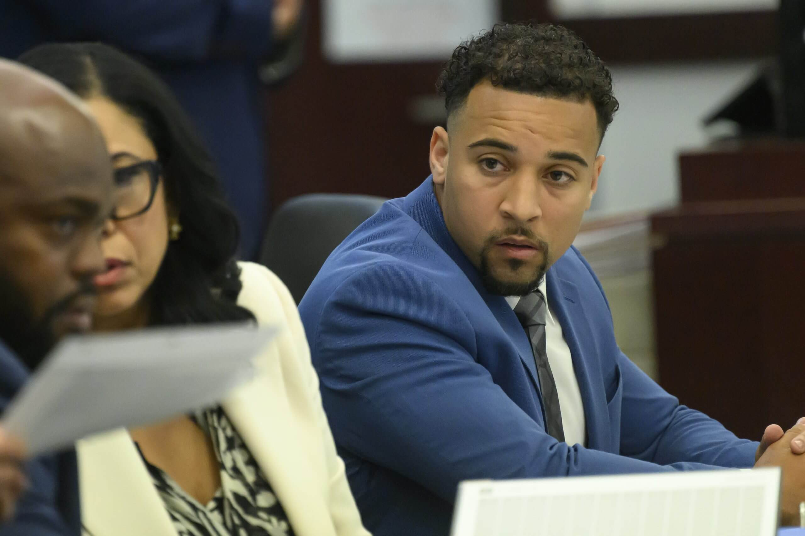

Former Titans Scout Blaise Taylor Gets Two Life Sentences in Nashville Murder Case
Sports | NFL
Published: Wednesday, September 10, 2026
NASHVILLE, Tenn. — Blaise Taylor’s football career has come to an end in a Nashville courtroom, where the former Tennessee Titans scout was ordered to spend the remainder of his life in prison for the deaths of his girlfriend and their unborn child.
Taylor, 30, was sentenced Wednesday, September 9, to two life terms that will be served consecutively, in addition to another 22 years behind bars.
The punishment follows Taylor’s conviction earlier this year in connection with the deaths of Jade Benning and her unborn daughter, Ivy.
A case that began in 2023
The investigation centered on an incident at Benning’s Nashville residence on February 25, 2023.
Benning, who was about five months pregnant, became critically ill after prosecutors said she unknowingly consumed cocaine that had been placed in a drink.
Emergency responders eventually transported her to a hospital. Her unborn daughter died on February 27. Benning died days later, on March 6, which happened to be her 25th birthday.
Authorities eventually arrested Taylor in Utah in 2024 before he was returned to Tennessee to face prosecution.
Jury reached its decision in July
Taylor’s case went to trial in July 2026.
Jurors ultimately convicted him on charges involving Benning’s death and the death of her unborn child. The verdict included a second-degree murder conviction for Benning, a first-degree murder conviction involving the unborn child and felony-murder convictions.
The jury’s decision came after prosecutors argued that Taylor intentionally caused the poisoning. Taylor’s defense challenged the state’s allegations and has continued to maintain that the case was not proven properly.
Family describes devastating loss
Benning’s family used the sentencing hearing to explain the personal consequences of the deaths.
Her mother, Bridget Benning Burks, told the court about the pain of losing her daughter and granddaughter and the difficulty of knowing that Benning trusted the person prosecutors accused of causing her death.
The family also reflected on the life Ivy never had the opportunity to experience and the milestones Jade would have shared with her loved ones.
Prosecutors question defense’s character letters
Taylor’s supporters submitted 87 letters to the court describing him in positive terms.
During the hearing, Assistant District Attorney Jan Norman highlighted what she said was missing from those letters. According to Norman, the submissions focused on Taylor’s personality, accomplishments, upbringing and relationships but did not address Jade, Ivy or the conduct that resulted in his convictions.

The judge ultimately imposed consecutive life sentences.
Taylor’s attorney plans to appeal
Following the sentencing, defense attorney Letitia Quinones-Hollins said Taylor’s legal team disagreed with the outcome.
The defense characterized the trial as flawed and the evidence as insufficient, and announced plans to challenge the convictions through the appeals process.
An appeal could potentially seek a new trial or another change to the court’s ruling. For now, however, Taylor remains under the sentence imposed Wednesday.
Football career preceded criminal case
Before becoming the defendant in a high-profile murder case, Taylor had established himself in football.
He played defensive back for Arkansas State from 2014 to 2017 and later transitioned into scouting. Taylor joined the Tennessee Titans’ scouting operation in 2019, remaining with the organization for several years.
Following his time in the NFL, he returned to the college football world and worked at Utah State as a senior defensive analyst.
His arrest in 2024 changed the direction of his career and ultimately led to the convictions and sentences handed down in Nashville.
The case now moves into the appellate process, with Taylor’s defense preparing to challenge the convictions.